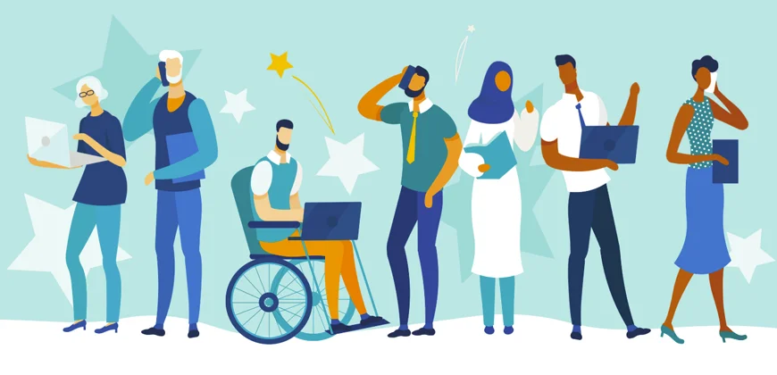

Valorize. Respeite. Conscientize.
O trabalho constrói sonhos, o respeito constrói futuro.
Saiba MaisValorização do Trabalho
Respeito
Respeitar todos os tipos de trabalho é construir uma sociedade mais justa e humana.
Saúde e Equilíbrio
Promover um ambiente saudável e equilibrado é essencial para o bem-estar de todos.
Inclusão de Minorias
Diversidade no ambiente de trabalho é fonte de inovação, criatividade e transformação social.
O Impacto da Conscientização

Construindo um Futuro Melhor
A conscientização no ambiente de trabalho promove não apenas relações mais humanas, mas também impacta diretamente no sucesso das empresas e no crescimento pessoal dos indivíduos. Cada pequeno ato de respeito e reconhecimento transforma a cultura organizacional e reflete em toda a sociedade.
Responsabilidade Social
Empresas que incentivam o respeito e a valorização da diversidade criam ambientes mais inclusivos e inovadores. Assumir responsabilidade social é mais do que uma obrigação: é um compromisso com um futuro onde todos têm voz, espaço e oportunidade de crescer.
O Futuro do Trabalho
Transformação Digital e Inclusão
Com a transformação digital acelerada, surgem novos desafios: garantir que todos, sem distinção, tenham acesso às tecnologias e às novas oportunidades. A inclusão digital é essencial para que o futuro do trabalho seja verdadeiramente democrático e justo.
Trabalho com Propósito
Mais do que remuneração, o futuro do trabalho valoriza propósito, bem-estar e impacto social. Empresas e profissionais alinhados com valores humanos constroem organizações mais resilientes e comunidades mais fortes.